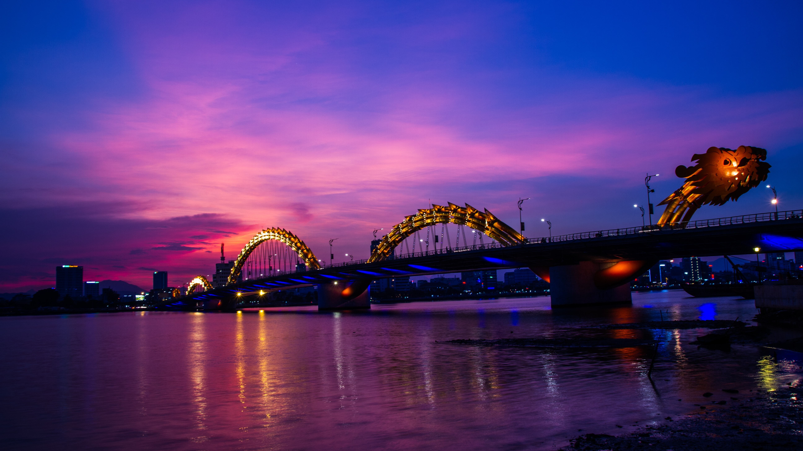

 Đà nẵng
Đà Nẵng là một thành phố trực thuộc trung ương, nằm trong vùng Duyên hải Nam Trung Bộ Việt Nam, là trung tâm kinh tế, tài chính, chính trị, văn hóa, du lịch, giáo dục - đào tạo, khoa học và công nghệ, y tế chuyên sâu của khu vực Miền Trung - Tây Nguyên và cả nước. Đà Nẵng là một trong những thành phố quan trọng nhất miền Trung, đóng vai trò hạt nhân trong Vùng kinh tế trọng điểm miền Trung, đồng thời cũng là một trong 5 thành phố trực thuộc Trung ương ở Việt Nam,[3] đô thị loại I, trung tâm cấp quốc gia, cùng với Hải Phòng và Cần Thơ. Đà Nẵng nằm ở vị trí trung độ của Việt Nam, có vị trí trọng yếu cả về kinh tế - xã hội và quốc phòng - an ninh của khu vực Miền Trung - Tây Nguyên và cả nước; là đầu mối giao thông rất quan trọng về đường bộ, đường sắt, đường biển và đường hàng không.[4] Trong những năm gần đây, Đà Nẵng tích cực đầu tư xây dựng cơ sở hạ tầng, cải thiện môi trường, nâng cao an sinh xã hội và được coi là "Thành phố đáng sống" của Việt Nam.[5][6] Năm 2018, Đà Nẵng được chọn đại diện cho Việt Nam lọt vào Top 10 Địa điểm Tốt nhất để Sống ở Nước ngoài do Tạp chí Du lịch Live and Invest Overseas (LIO) bình chọn.[7]